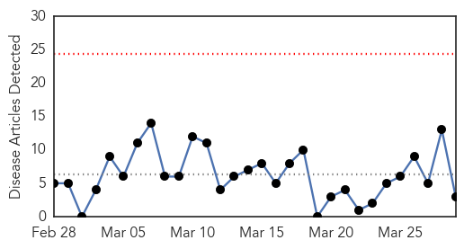
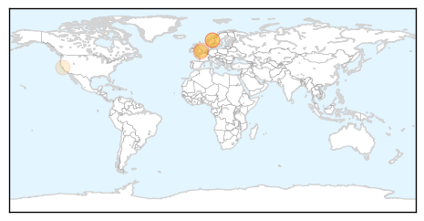
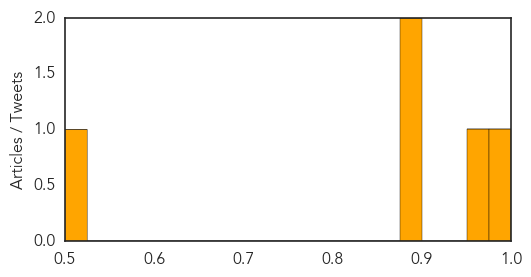

Measles
30-Day Web Trend
0 alerts, 0 warnings

30-Day Twitter Trend
0 alerts, 0 warnings

Article Locations
Article Confidences
Top Articles:
Top Tweets:
-
No tweets found for Mar 29, 2014
Hepatitis
30-Day Web Trend
3 alerts, 0 warnings
30-Day Twitter Trend
0 alerts, 0 warnings

Article Locations
Article Confidences
Top Articles:
- 0.979
- 28 cases of hepatitis A infection reported in Norway - Xinhua
- 0.963
- 28 cases of hepatitis A infection found in Norway
- 0.899
- Hepatitis E in pork could be making tens of thousands ill
- 0.899
- Hepatitis E in pork could be making tens of thousands ill
- 0.502
- Sterilization error triggers call for HIV testing for some California Pacific Medical Center patients
Top Tweets:
-
No tweets found for Mar 29, 2014